📊 미국장 장전(프리장) 리포트
18 / 100 — 극단적 공포 · 🔥 극단 공포 = 바닥 매수권(백테스트 F&G≤25 매수 20일 +4~9%)
🌎미국 증시 마감
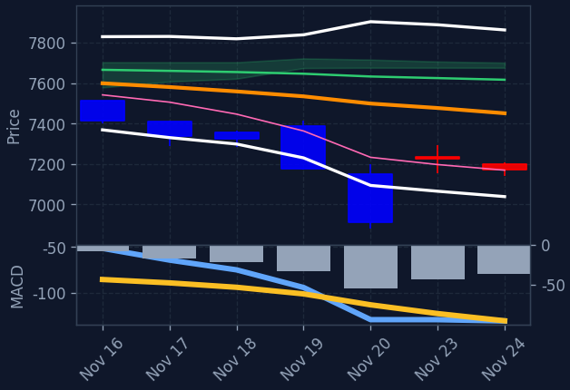
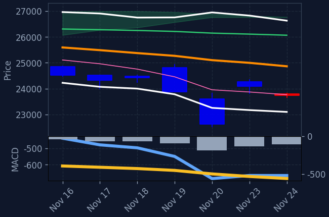
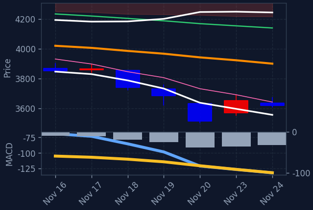

미국 프리장 시장은 나스닥 선물(-0.94%)과 S&P500 선물(-0.48%)이 하락하며 반도체 및 대형 기술주 중심으로 차익 실현 매물이 출회되는 약세 분위기를 보이고 있습니다. 직전 정규장의 폭등 이후 반도체(-3.30%) 섹터가 조정을 받는 반면, 2차전지/리튬(+5.23%), 태양광/신재생(+4.15%), 방산/우주항공(+3.49%) 섹터는 강한 상승세를 나타내며 시장 흐름을 주도하고 있습니다. 데이터센터 성장에 대한 경고 목소리와 엔비디아 랠리 점검 국면이 맞물려 기술주 전반에 숨고르기가 진행되는 양상입니다.
전일 정규장에서 젠슨 황 CEO 복귀 이슈 등으로 엔비디아가 30% 이상 폭등하고 필라델피아반도체 지수(+14.03%)가 급등한 후, 프리장에서는 데이터센터 둔화 가능성에 대한 경고 헤드라인이 부각되며 이익 실현 매물이 쏟아지고 있습니다. 이로 인해 엔비디아(-4.59%), AMD(-3.85%), 브로드컴(-2.62%) 등이 하락세를 타고 있으며 반도체 3배 레버리지 ETF(SOXL)는 -10.00% 급락 중입니다. 반면 테마 순환매가 유입되면서 2차전지/리튬(+5.23%)과 태양광/신재생(+4.15%) 섹터는 직전 마감 후 나온 뉴스 맥락 속에서 프리장 강세를 띠고 있습니다. 메타(-1.06%), 테크/IT(-1.50%) 등 주요 빅테크 전반도 하락세로 돌아서며 지수 선물 밀림 현상을 유발하고 있습니다.
프리장 테마 흐름은 그동안 랠리를 이끈 반도체(-3.30%) 및 기술주에서 자금이 빠져나와 2차전지(+5.23%), 태양광(+4.15%), 방산/우주항공(+3.49%) 등 대안 테마로 이동하는 뚜렷한 순환매 양상을 보여줍니다. 금(-0.85%)과 WTI 유가(-0.35%) 등 원자재 가격은 약보합세를 유지 중이며, 헬스케어/바이오(+0.78%)와 금융(+0.34%) 섹터가 소폭 상승하며 시장의 추가 하락을 방어하고 있습니다. 엔비디아 중심의 AI 반도체 둔화 우려 뉴스가 하방 압력으로 작용하는 가운데 친환경 에너지 섹터로의 이연 매수세가 돋보입니다. 한국 증시 관점에서는 미 증시 반도체주의 단기 차익 실현 여파에 따른 관련 종목의 변동성 확대에 유의하되, 프리장에서 반등을 모색한 2차전지 및 친환경 테마로의 온기 전파 가능성을 주시할 필요가 있습니다.
🇺🇸미국 야간 (선물·M7·SOXL · 마감 등락 + 프리장/애프터 등락)
📊 나스닥 선물 -0.94%
📊 S&P500 선물 -0.48%
- 엔비디아 NVDA·나스닥 마감 +31.5% · 프리장 -4.4%
- 테슬라 TSLA·나스닥 마감 +11.5% · 프리장 -1.1%
- 메타 META·나스닥 마감 +6.5% · 프리장 -0.9%
- 알파벳 GOOGL·나스닥 마감 +6.3% · 프리장 -0.4%
- 아마존 AMZN·나스닥 마감 +3.5% · 프리장 +0.1%
- 애플 AAPL·나스닥 마감 +1.9% · 프리장 +0.6%
- 마이크로소프트 MSFT·나스닥 마감 +1.6% · 프리장 +0.3%
- 한국 ETF(EWY) EWY 마감 +10.1% · 프리장 -2.0%
- SOXL(반도체 3X) SOXL 마감 +39.9% · 프리장 -10.2%
🚀프리장 급등 TOP5 (ABCD 필터 통과 종목 중)
-
코스트코
COST·나스닥 · 종가 $1,097.91 (전일 -0.38%) (프리장 +0.64%)
· 필수소비재유통C 시그널 ⓘ대세 정배열 + 신고가 (-2.3%, 60선+12%)
-
월마트
WMT·나스닥 · 종가 $129.58 (전일 +1.27%) (프리장 +0.54%)
· 필수소비재유통A/C 시그널 ⓘ대세 정배열 + 신고가 (-1.7%, 60선+12%) · ⚠️끝물주의(RSI다이버전스(74→67))
-
버라이즌
VZ·NYSE · 종가 $46.45 (전일 -0.06%) (프리장 +0.48%)
· 통신D 시그널 ⓘ추세 반전 (일목구름 위, 5>20, MACD+, 20<60(초입))
-
P&G
PG·NYSE · 종가 $169.60 (전일 +0.14%) (프리장 +0.35%)
· 퍼스널케어C 시그널 ⓘ대세 정배열 + 신고가 (-2.3%, 60선+9%)
-
트레이드 데스크
TTD·나스닥 · 종가 $14.06 (전일 +5.08%) (프리장 -0.21%)
· 소프트웨어B 시그널 ⓘ급등 (10일 +24%) / 20일선 위 (+0.4%, 60선기울기 +2.1%) / 단기눌림 (5일선 -3.0%, 5일고점 -11.4%) · 고점대비 -14.4%
🔥강세 섹터 (상승률 상위)
- 2차전지/리튬 +5.23%
- 태양광/신재생 +4.15%
- 방산/우주항공 +3.49%
- 헬스케어/바이오 +0.78%
🔻약세 섹터 (하락률 상위)
- 반도체 -3.30%
- 기술/IT -1.50%
- 금융 +0.34%
- 에너지 +0.43%
💰미국장 거래대금 순위 TOP10 (S&P500)
-
1.
테슬라
TSLA·나스닥 · 종가 $385.46 (전일 +11.46%)
거래대금 24조 3,236억시총 2,046조 9,512억
-
2.
코스트코
COST·나스닥 · 종가 $1,097.91 (전일 -0.38%)
거래대금 4조 6,627억시총 653조 6,198억
-
3.
월마트
WMT·나스닥 · 종가 $129.58 (전일 +1.27%)
거래대금 4조 3,705억시총 1,381조 1,608억
-
4.
P&G
PG·NYSE · 종가 $169.60 (전일 +0.14%)
거래대금 2조 3,260억시총 528조 1,127억
-
5.
애플로빈
APP·나스닥 · 종가 $373.92 (전일 +7.36%)
거래대금 2조 1,609억시총 166조 4,397억
-
6.
디즈니
DIS·NYSE · 종가 $120.27 (전일 +1.94%)
거래대금 1조 5,671억시총 275조 9,819억
-
7.
길리어드 사이언시스
GILD·나스닥 · 종가 $170.59 (전일 +2.50%)
거래대금 1조 5,227억시총 284조 2,640억
-
8.
핀둬둬 ADR
PDD·나스닥 · 종가 $87.14 (전일 +4.13%)
거래대금 1조 4,943억시총 166조 6,370억
-
9.
버라이즌
VZ·NYSE · 종가 $46.45 (전일 -0.06%)
거래대금 1조 3,054억시총 258조 6,403억
-
10.
옥타
OKTA·나스닥 · 종가 $206.28 (전일 +7.74%)
거래대금 1조 333억시총 48조 4,483억
🏆미국 추천 Top 3
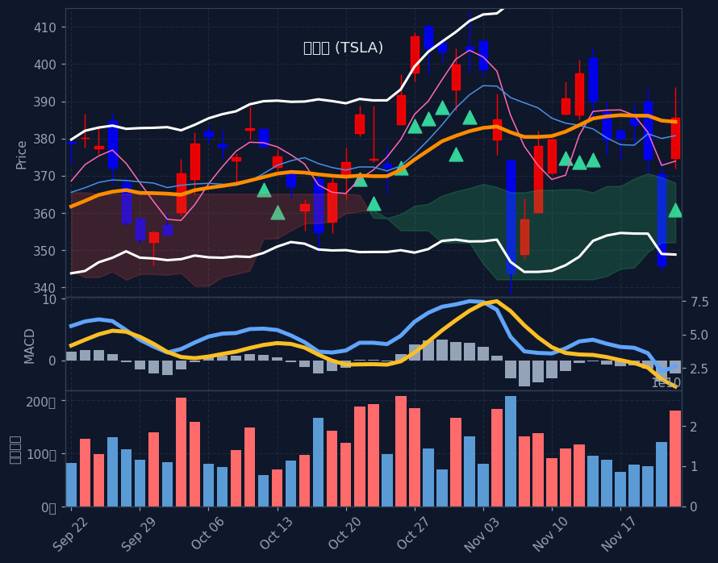
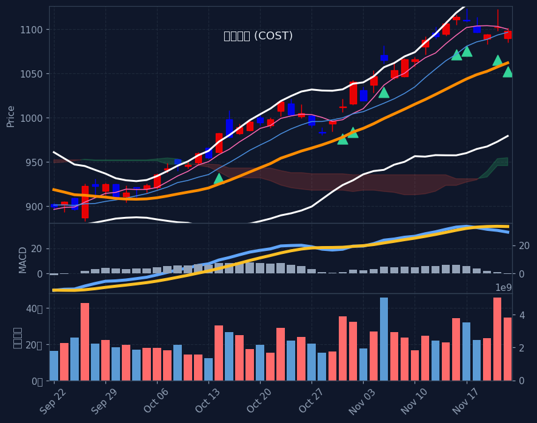
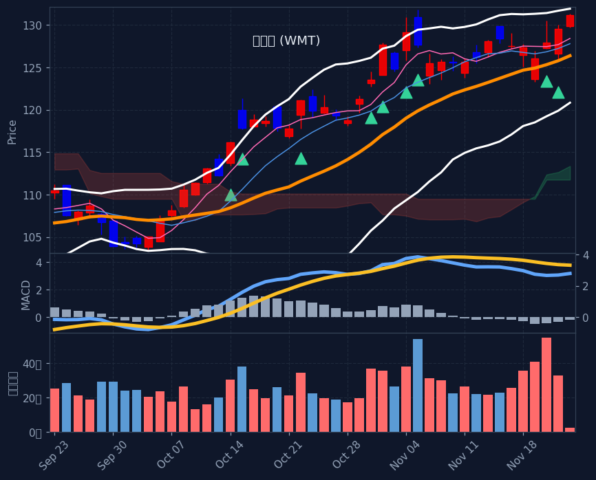
🇺🇸미국 종목 스크리닝 (전략별 칸 · A/B/C/D)
📊 A 수렴 후 상승 (3)
-
테슬라
TSLA·나스닥 · 종가 $385.46 (전일 +11.46%) (프리장 -0.77%)
A 시그널 ⓘ 20일선 +0.3%시총 2,046조 9,512억 · 거래대금 24조 3,236억테마: 자동차🔻 한국인 순매도 최근5일 678억(자금유출)수렴대 위로 상승전환 (수렴 2.8%) / 120선 위 (+4.0%) · MACD[상승]
-
월마트
WMT·나스닥 · 종가 $129.58 (전일 +1.27%) (프리장 +0.54%)
A/C 시그널 ⓘ 20일선 +3.0% ⚠️끝물ⓘ시총 1,381조 1,608억 · 거래대금 4조 3,705억테마: 필수소비재유통수렴대 위로 상승전환 (수렴 1.5%) / 120선 위 (+13.4%) · MACD[0선위,상승]
-
길리어드 사이언시스
GILD·나스닥 · 종가 $170.59 (전일 +2.50%)
A 시그널 ⓘ 20일선 +1.6%시총 284조 2,640억 · 거래대금 1조 5,227억테마: 바이오수렴대 위로 상승전환 (수렴 0.5%) / 120선 위 (+18.1%) · MACD[0선위,상승]
🔄 B 20일선 눌림목 (3)
-
애플로빈
APP·나스닥 · 종가 $373.92 (전일 +7.36%) (프리장 -1.54%)
B 시그널 ⓘ 20일선 +9.7%시총 166조 4,397억 · 거래대금 2조 1,609억테마: 광고급등 (10일 +21%) / 20일선 위 (+9.7%, 60선기울기 +4.6%) / 단기눌림 (5일선 -1.1%, 5일고점 -9.9%) · 고점대비 -10.7%
-
제이프로그
FROG·나스닥 · 종가 $106.66 (전일 +5.64%) (프리장 -1.43%)
B/D 시그널 ⓘ 20일선 +5.5%시총 17조 8,577억 · 거래대금 2,473억테마: 소프트웨어급등 (10일 +22%) / 20일선 위 (+5.5%, 60선기울기 +2.7%) / 단기눌림 (5일선 -0.6%, 5일고점 -12.5%) · 고점대비 -12.5%
-
트레이드 데스크
TTD·나스닥 · 종가 $14.06 (전일 +5.08%) (프리장 -0.21%)
B 시그널 ⓘ 20일선 +0.4%시총 8조 9,325억 · 거래대금 2,550억테마: 소프트웨어급등 (10일 +24%) / 20일선 위 (+0.4%, 60선기울기 +2.1%) / 단기눌림 (5일선 -3.0%, 5일고점 -11.4%) · 고점대비 -14.4%
📈 C 추세추종 (3)
-
코스트코
COST·나스닥 · 종가 $1,097.91 (전일 -0.38%) (프리장 +0.64%)
C 시그널 ⓘ 20일선 +3.4%시총 653조 6,198억 · 거래대금 4조 6,627억테마: 필수소비재유통대세 정배열 + 신고가 (-2.3%, 60선+12%)
-
월마트
WMT·나스닥 · 종가 $129.58 (전일 +1.27%) (프리장 +0.54%)
A/C 시그널 ⓘ 20일선 +3.0% ⚠️끝물ⓘ시총 1,381조 1,608억 · 거래대금 4조 3,705억테마: 필수소비재유통대세 정배열 + 신고가 (-1.7%, 60선+12%) · ⚠️끝물주의(RSI다이버전스(74→67))
-
P&G
PG·NYSE · 종가 $169.60 (전일 +0.14%) (프리장 +0.35%)
C 시그널 ⓘ 20일선 +1.9%시총 528조 1,127억 · 거래대금 2조 3,260억테마: 퍼스널케어대세 정배열 + 신고가 (-2.3%, 60선+9%)
🔃 D 추세 반전 (3)
-
핀둬둬 ADR
PDD·나스닥 · 종가 $87.14 (전일 +4.13%) (프리장 -0.73%)
A/D 시그널 ⓘ 20일선 +8.3%시총 166조 6,370억 · 거래대금 1조 4,943억테마: 온라인 서비스추세 반전 (일목구름 위, 5>20, MACD+, 20>60)
-
버라이즌
VZ·NYSE · 종가 $46.45 (전일 -0.06%) (프리장 +0.48%)
D 시그널 ⓘ 20일선 +1.8%시총 258조 6,403억 · 거래대금 1조 3,054억테마: 통신추세 반전 (일목구름 위, 5>20, MACD+, 20<60(초입))
-
옥타
OKTA·나스닥 · 종가 $206.28 (전일 +7.74%) (프리장 -1.34%)
D 시그널 ⓘ 20일선 +7.4%시총 48조 4,483억 · 거래대금 1조 333억테마: 소프트웨어추세 반전 (일목구름 위, 5>20, MACD+, 20<60(초입))
※ S&P500 대상 A/B/C/D 전략별 분류(각 칸 거래대금순). 한 종목이 여러 전략에 잡히면 각 칸에 중복 표기. 백테스트상 기계적 엣지는 약하며 매수 추천이 아닙니다. 판단·책임은 본인.
🇰🇷한국인 자금흐름 (서학개미 · 최근 5거래일 순매수/순매도, 억원)
📅 결제일 11/17~11/23(5거래일) 기준 · 오늘 11/24 기준 약 1일 전 데이터 · T+2 결제 기준(실제 매매는 약 2거래일 전)
💸 한국인 순매수 일평균: +6,401억 (전주 +5,859억 대비 +9.2%) · 5일 총액 +32,003억
💰 순매수 TOP5 — 개별종목 (11/17~11/23 결제 기준)
- 엔비디아 NVDA·나스닥 +3,732억시총 5,354조 1,102억 · 거래대금 172조 7,684억
- 앤트로픽 클래스 A +2,683억
- 특정 티커 불명 X +1,556억
- 아이온큐 IONQ·NYSE +1,065억시총 14조 5,137억 · 거래대금 8,259억
- 앱러빈 APP·나스닥 +554억시총 166조 4,323억 · 거래대금 2조 1,608억
📦 순매수 TOP5 — ETF (11/17~11/23 결제 기준)
- 디렉션 데일리 세미컨덕터 불 3X ETF SOXL +11,971억거래대금 22조 9,130억
- 프로셰어즈 울트라프로 QQQ ETF TQQQ +1,867억거래대금 10조 1,739억
- 나스닥100 2X(QLD) QLD +897억거래대금 1조 1,728억
- 나스닥100 ETF(QQQM) QQQM +537억거래대금 4조 765억
- 나스닥100 ETF(QQQ) QQQ +492억거래대금 74조 2,882억
🔻 순매도 TOP3 — 자금 유출 (11/17~11/23 결제 기준)
- 반도체 3배 레버리지 ETF SOXL −1,320억거래대금 22조 9,130억
- 테슬라 TSLA·나스닥 −678억시총 2,046조 8,599억 · 거래대금 24조 3,225억
- 마이크로소프트 MSFT·나스닥 −561억시총 4,913조 3,890억 · 거래대금 20조 787억
※ 예탁결제원(SEIBro) 최근 5거래일 한국인 순매수/순매도 결제금액(T+2) · 11/17~11/23 결제 기준(실제 매매는 약 2거래일 전). 자금이 어디로 유입·유출되는지 참고용.
🩹E 투매 바닥 반등 (투매 capitulation + 반등 · 🔥=지수 동반 바닥)
-
넷이즈 ADR
NTES·나스닥 · $103.20
+3.36%
RSI 25
🔥 시장 동반 바닥(지수RSI 42·공포탐욕 18)투매바닥 반등 (RSI 25·50선-17%·거래량2.5x)
-
인튜이트
INTU·나스닥 · $275.46
+1.86%
RSI 27
🔥 시장 동반 바닥(지수RSI 42·공포탐욕 18)투매바닥 반등 (RSI 27·50선-15%·거래량3.1x)
※ 투매 바닥(RSI≤30+50선이격+거래량폭증)에서 반등 시작 포착, 4시간봉 RSI도 과매도. 🔥는 지수(나스닥/S&P·코스피)도 RSI<35 동반 바닥(강신호). 떨어지는 칼날 위험 — 매수 추천 아님, 판단·책임 본인.
🚀급등 초입 (20일 신고가 돌파·거래량 급증)
-
키메라 테라퓨틱스
KYMR·나스닥 · $150.37
+30.40%
급등초입 (20일돌파·거래량7.7배·당일+30.4%·20선+18%)
※ 급등 초입(추세확인보다 빠른 돌파 진입) 참고용. 백테스트 표본 적고 상승장 기준 — 가짜 신호·되돌림 위험, 매수 추천 아님.
📐F. 60일선 지지 (60일선까지 눌렸다 지지 마감 · 참고용)
-
테슬라
TSLA·나스닥 · $385.46
+11.46%
60일선 지지 (저가 -0.6%·종가 +3.0%·꼬리지지 62%)
-
퀄리스
QLYS·나스닥 · $197.69
+6.33%
60일선 지지 (저가 +0.4%·종가 +4.2%·꼬리지지 62%)
-
델타항공
DAL·NYSE · $84.34
+5.41%
60일선 지지 (저가 +0.4%·종가 +3.0%·꼬리지지 75%)
-
트레이드 데스크
TTD·나스닥 · $14.06
+5.08%
60일선 지지 (저가 +0.0%·종가 +4.9%·꼬리지지 76%)
-
인튜이티브 서지컬
ISRG·나스닥 · $416.23
+4.31%
60일선 지지 (저가 -1.8%·종가 +0.4%·꼬리지지 82%)
-
메드페이스 홀딩스
MEDP·나스닥 · $634.55
+3.93%
60일선 지지 (저가 -0.9%·종가 +1.1%·꼬리지지 71%)
-
패스널
FAST·나스닥 · $52.06
+2.87%
60일선 지지 (저가 -0.3%·종가 +1.5%·꼬리지지 73%)
-
엔터지
ETR·NYSE · $107.28
+2.78%
60일선 지지 (저가 +0.2%·종가 +1.6%·꼬리지지 70%)
-
다나허
DHR·NYSE · $225.66
+2.41%
60일선 지지 (저가 +0.5%·종가 +1.6%·꼬리지지 58%)
-
유니버설 헬스 서비스
UHS·NYSE · $183.33
+2.17%
60일선 지지 (저가 -1.5%·종가 +1.4%·꼬리지지 83%)
※ 60일선까지 눌렸다 지지받고 마감한 종목(참고 태그). 백테스트상 다음날 반등 엣지 없음(승률 48~49%·생존편향 포함) 확인됨 — 매수 추천·시그널 아님, 종합점수/Top3에도 미반영. 단순 참고용.
🧬삼각수렴 임박 (변동성 수축·돌파 직전 코일 · 참고용)
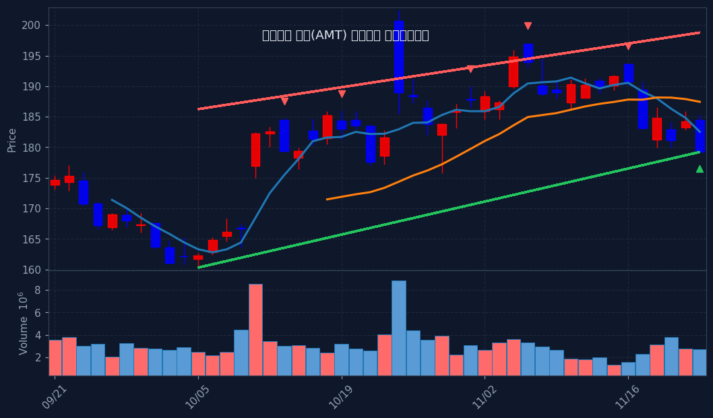
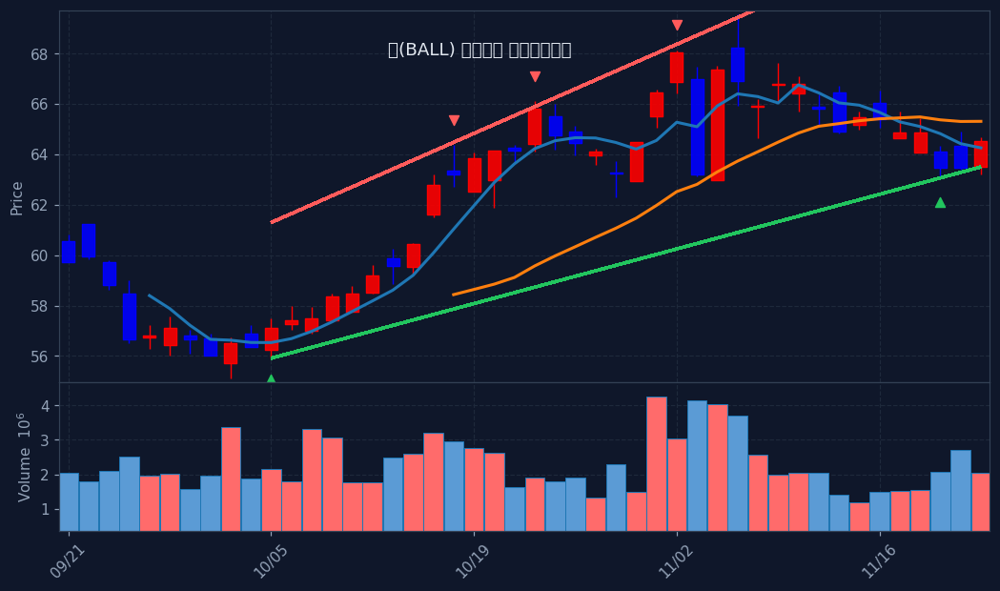
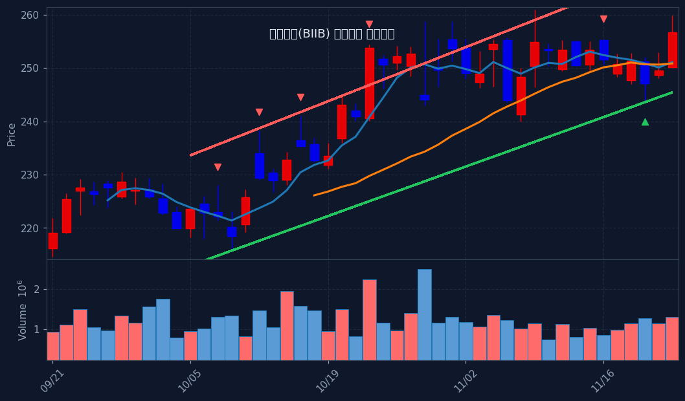
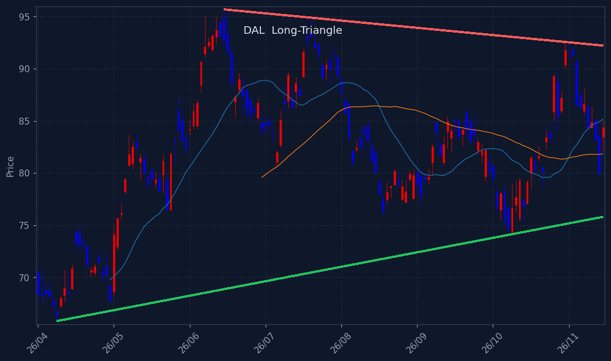
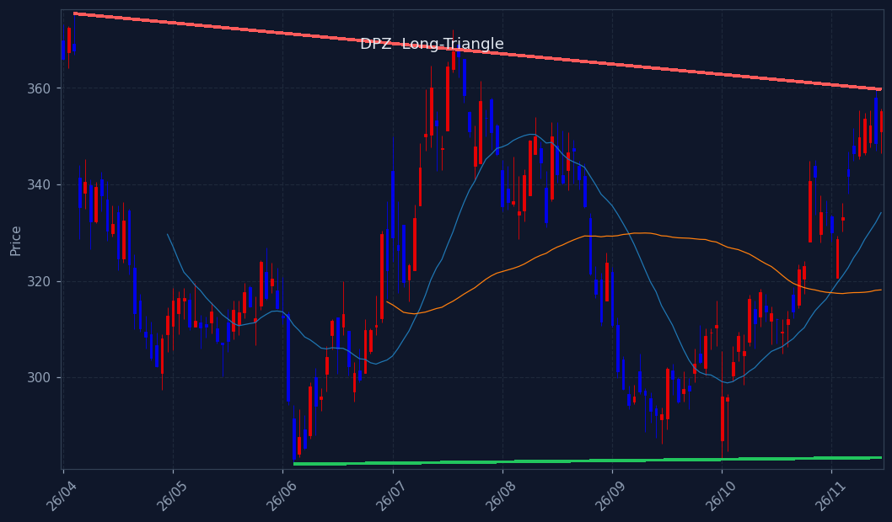
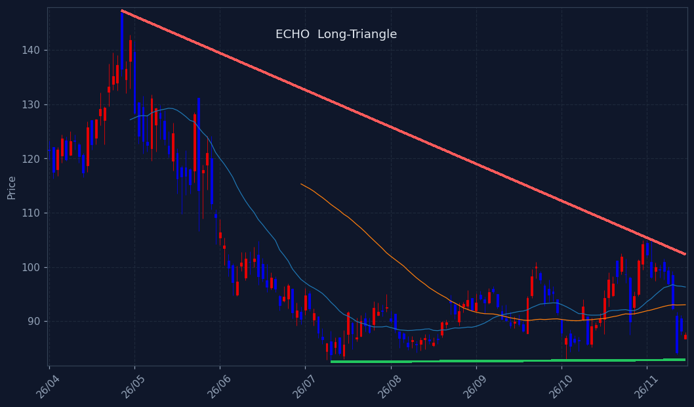
※ 삼각수렴 돌파 임박 종목. 📐장기 삼각수렴(수개월 대형 삼각형, 볼록껍질 추세선+실수축) = 백테스트 491건 승률 66%·평균 +8.7%/20일로 엣지 확인(HOOD·TSLA류 대박 초입). 단기 코일 = 엣지 약함(승률 ~60% 베타 수준). 🔻대칭=고점↓·저점↑ / 🟰바닥지지=저점 평평. 매수추천 아님·종합점수/Top3 미반영(관찰용).